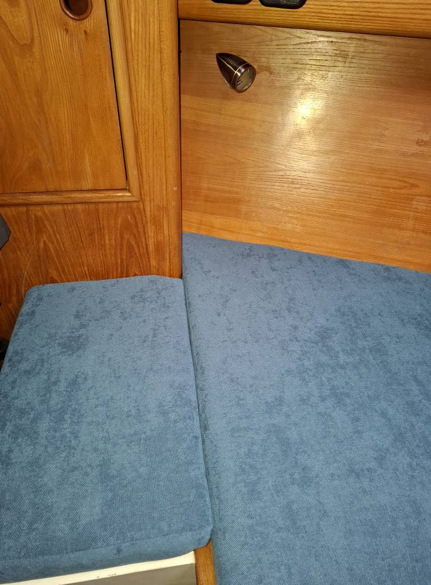
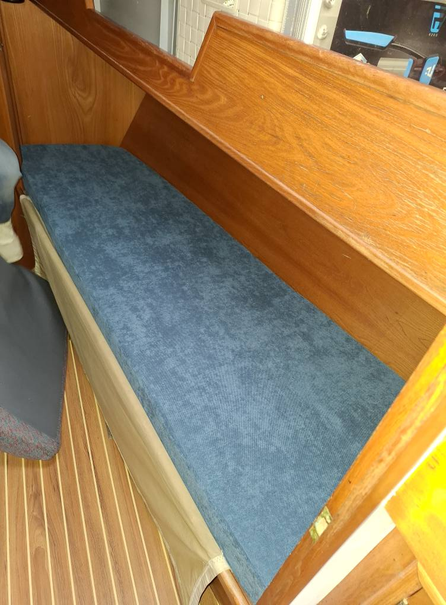
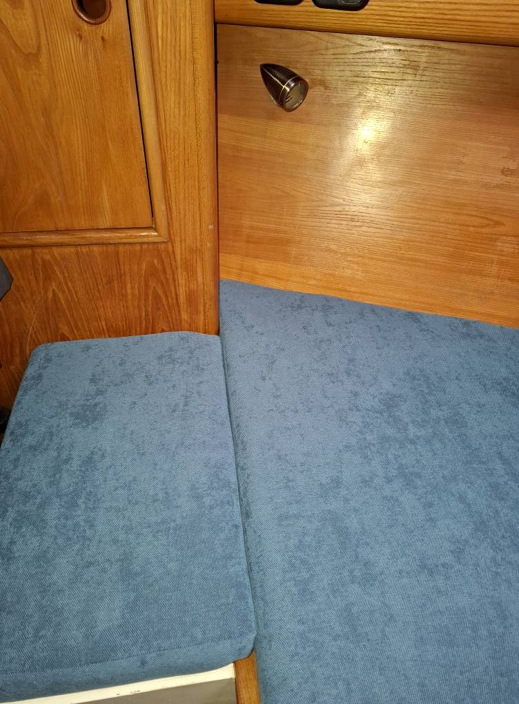
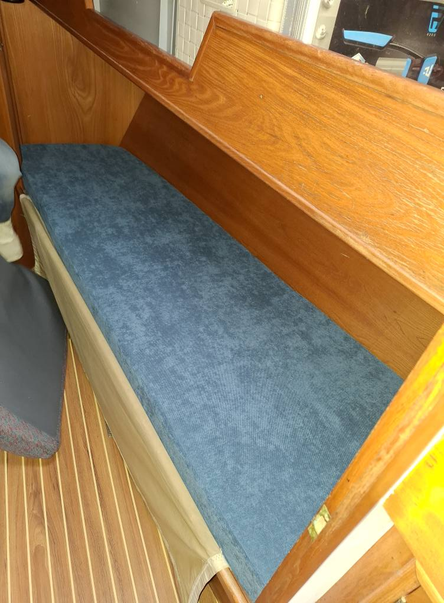

Housse de bimini


Confection d'une housse de bain de soleil pour un Targa 44üõ•.
Trois coussins solidaires entre eux et un coussin pour accéder au hublot.
Finition velcro et sangle pour l'attacher.
 




Réalisation de la sellerie pour ce voilier ⛵️ OVNI 41 de la cabine avant, arrière et du carré.
Coussins réalisés sur mesure, déhoussables et tissu adapté en milieu marin.⚓️